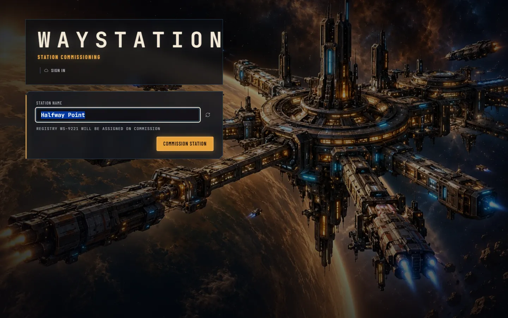
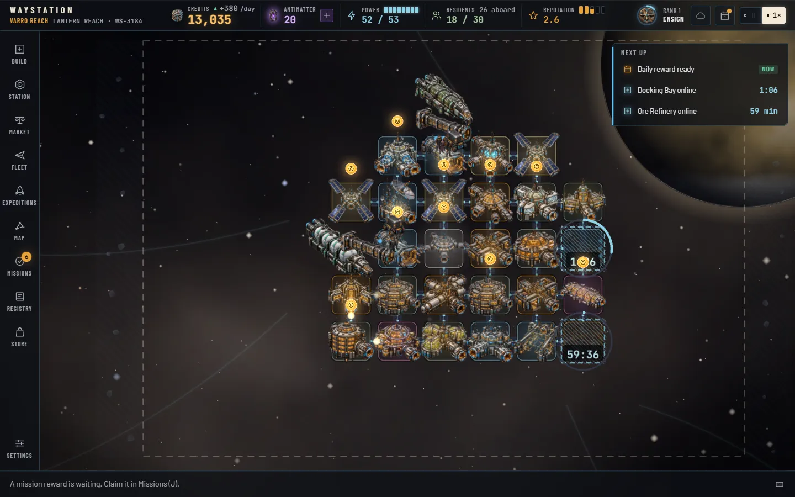
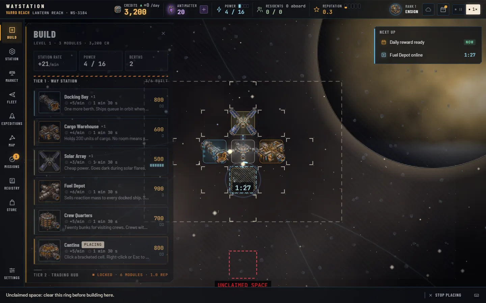
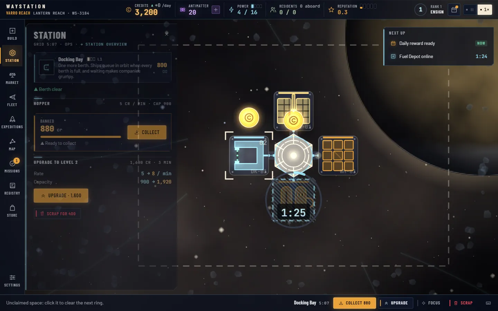
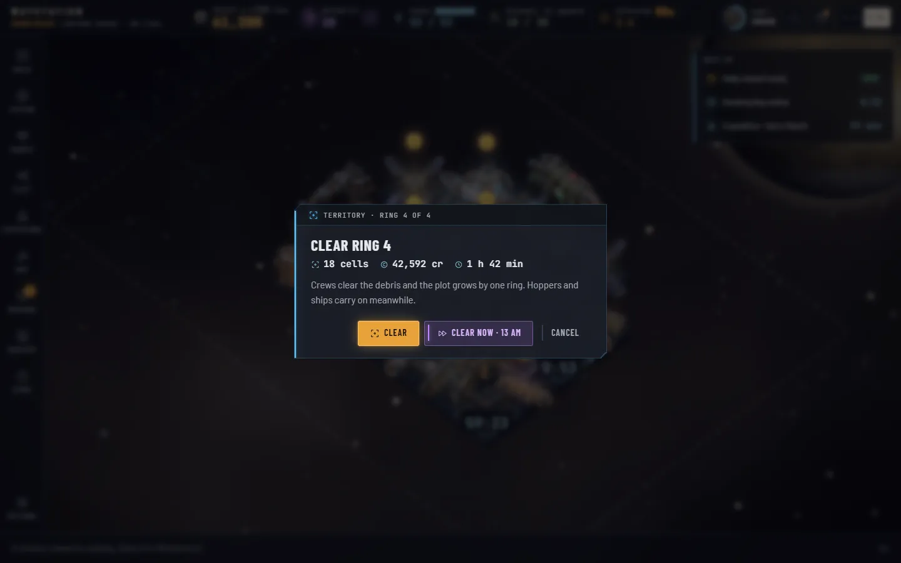
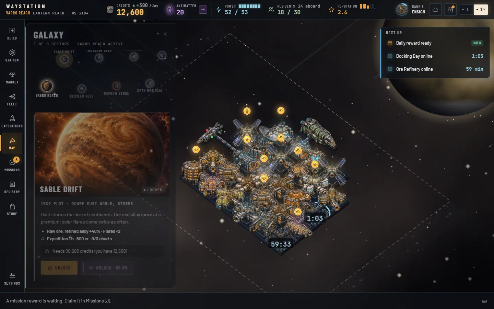
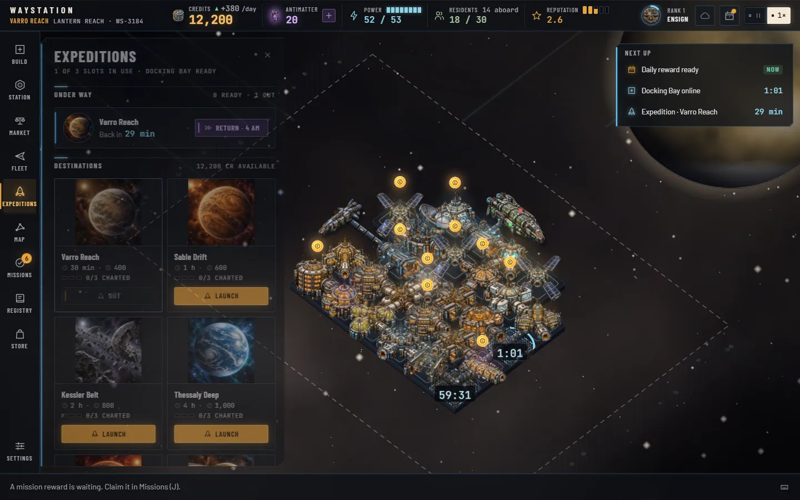
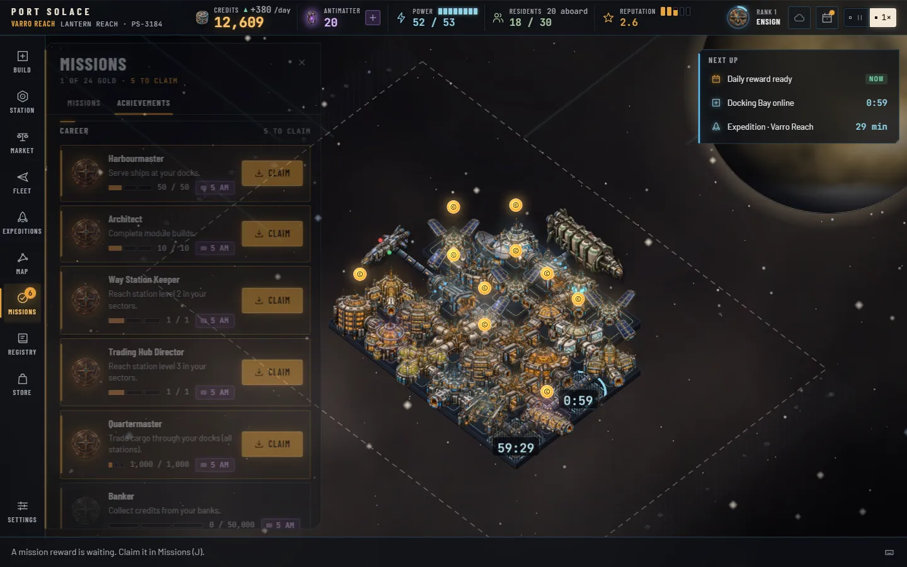
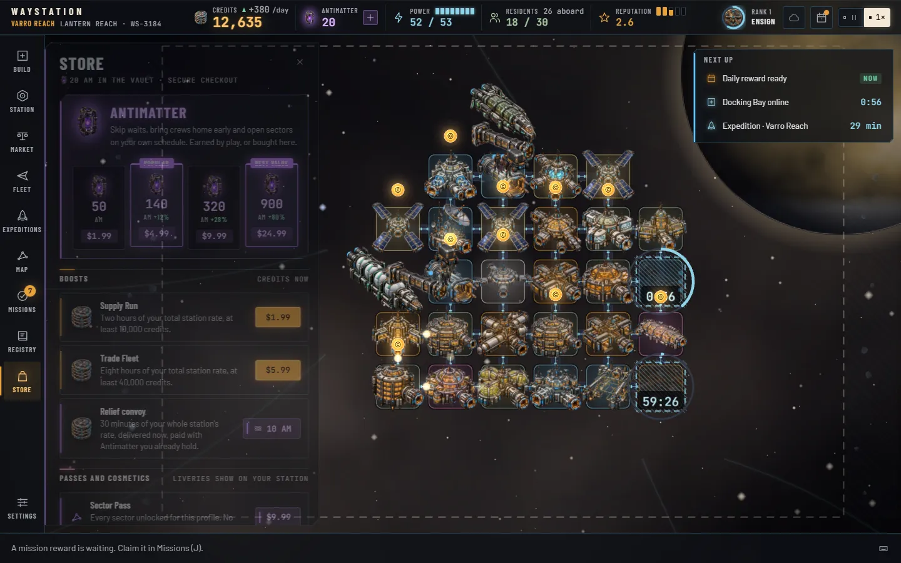
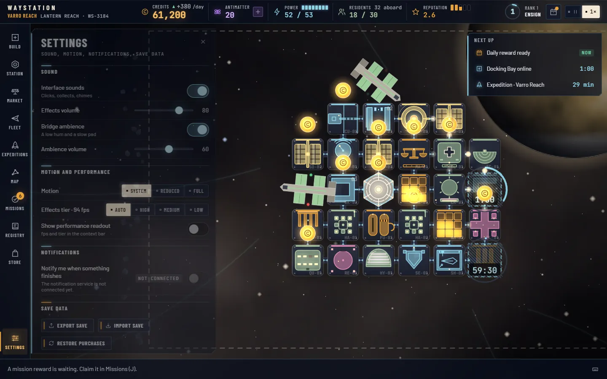

Operating manual · Waystation v2.1
Waystation manual
You command a way station on the edge of interstellar space. This manual explains every readout on the bridge, every module you can build and what it costs, how the banks fill while you are away, how ships, residents and reputation work, and what it takes to open the next sector. It is written to be read from the top or dipped into from the contents.
- Numbers from the shipped game data
- Real-time timers
- Desktop and tablet
- Updated 2026-10-19
01What Waystation isA builder you come back to
Waystation is a space-station builder that plays in the browser and keeps running on the clock while the tab is closed. You start with one docking collar and 6,000 credits. You end, a few weeks later, with a port the whole reach routes through, and then you do it again around another star.
The game has two halves. The live half is what you watch: freighters pull up to your bays, trade cargo, refuel and pay. The come-back half is what happens while you are gone: every module earns credits by the minute into its own bank, builds and upgrades finish on real timers, expeditions return, rings of unclaimed space get cleared, and the daily reward resets at midnight. Most of your credits, by a wide margin, come from the banks. The ships are the life of the place; the banks are the income.
Nothing is rushed. A tier-1 module takes a minute and a half to come online. A tier-4 Jump Gate Beacon takes four hours, and taking it to level 3 is a twenty-hour project. There is no speed-up button: the game runs at one pace, Pause or 1×. The only accelerator is Antimatter, a violet premium currency you earn steadily by playing and can also buy. Nothing in the game is gated behind it.
What you do, in one breath
- Build modules next to the station, inside your plot, and wait for them to come online.
- Tap banks: a glowing coin above a module means it is ready. The credits fly to your counter.
- Serve ships: give them a berth with an open side, fuel, a bed and a hot meal, and they pay and trust you.
- Trade: ships sell what their home world exports and buy what it imports. Set Buy and Sell per good.
- Keep the lights on: every module draws power; solar arrays go dark in a flare, reactors do not.
- Grow a town: residents move in when quality of life is high, pay rent and run businesses.
- Expand: clear rings of unclaimed space around the hub; unlock the next of eight sectors.
- Venture out: send expeditions for charts, cargo, Antimatter and discoveries for the Registry.
- Come back: claim missions and achievements, climb the Commander ranks, keep the daily streak.
Two clocks
Two kinds of time run at once and it helps to keep them apart. Real time is the wall clock: build timers, bank filling, expeditions, ring clearing and the daily reward all run on it, whether or not the game is open. Game time is counted in days: one game day lasts 48 seconds at 1×, and only advances while the bridge is open and not paused. Ships, trade, residents, reputation drift and transmissions run on game days. The status bar shows income per game day; the Build panel shows your bank rate per real minute.
02Your first ten minutesMirrors the tour
The game opens a short guided tour the first time you commission a station. This chapter walks the same path, so you can read ahead or catch anything you skipped. You can replay the tour later from Settings.

Before the tour starts, two things happen. The daily reward sheet opens, because a fresh profile has a reward waiting; claim it or press Later. And the Build button on the left rail starts to pulse: that is the game's first pointer.
- Welcome, Commander
The Core Hub sits in the middle of the world. Drag to pan and roll the wheel to zoom; 0 fits the station back into view. The dashed line around the hub is the edge of your plot: a 7×5 field of 35 cells you can build on.
- The status bar
Across the top: Credits with yesterday's income, Antimatter with a + that opens the Store, Power used over produced, Residents over homes with the crews aboard, Reputation out of five, then your Commander rank ring, the daily reward bell and the Pause / 1× control.
- Open Build
Press B or click Build. The panel lists four tiers of modules with their cost, bank rate per minute, power pips and build time. Only tier 1 is open at level 1.
- Place a Docking Bay
Click the Docking Bay card, then a bracketed cell. Ships need a berth, and a berth needs an open side: leave at least one empty cell next to every bay so ships can pull up. Your first three tier-1 builds are instant.
- Power: a Solar Array
Every module draws power; the hub makes 10 and a Solar Array adds 6. Place one now, before the readout turns red.
- Storage: a Cargo Warehouse
The hub holds 50 units of cargo. A warehouse adds 200. Without room you cannot buy what ships are hauling, and trade is where the live credits come from.
- Builds take time from now on
Your fourth module arrives as a scaffold: a hatched plate, a progress ring and a timer. Tier-1 builds take 90 seconds, tier 2 twelve minutes, tier 3 an hour, tier 4 four hours. Click the scaffold and you can skip the wait for Antimatter: 1 AM per eight minutes left, so the first skips cost a single AM.
- Banks
Modules earn into a local bank. When a bank is a quarter full a bobbing coin appears above the plate; when it is full the coin grows a halo and nothing more accrues until you collect. Tap the coin. The hub's bank is the first one you will see.
- Ships and trade
The first ship is already on approach. Fleet (F) shows who is docked, holding or departing and what each company trusts you; Market (M) shows prices, your stock and the Buy / Sell policy for every good.
- Missions and achievements
Missions (J) keeps three goals live at a time and a second tab of lifetime achievements in bronze, silver and gold. Finishing a goal is not the end of it: come back and press Claim.
- Territory and the galaxy
The hatched, dim field around your plot is unclaimed space. Click it to buy the next ring. Map (G) shows the other seven sectors, each with its own world, bias and lock.
- Expeditions
Expeditions (E) sends a survey from your Docking Bay to any sector, locked or not. It comes back after 30 minutes to a day with goods, often a chart, sometimes Antimatter or a discovery for the Registry.
- Daily reward, the Store and this manual
The bell in the status bar is the seven-day streak. The Store sells Antimatter and runs in test mode for now. You have the bridge.
A sensible first session
The Commissioning chapter of missions is the tutorial's reward track: build a dock, a warehouse and a solar array, tap a bank, serve three ships, read a transmission, clear your first ring. Together those seven missions pay 35 Antimatter on top of the 20 you start with, plus 4,100 credits. With a Fuel Depot and Crew Quarters down as well, you have a station that earns about 25 credits a minute into its banks and takes visitors' money on the side.
Then leave it. Come back in an hour and the banks are a third full; come back tomorrow and they are at their caps, the ring is cleared and the daily is waiting. That is the shape of the whole game.
03The bridgeStatus bar · rail · panels · context bar

The world fills the screen. Everything you touch floats over it as glass: a status bar, a command rail, one panel at a time, a notices column and a context bar. Nothing on the bridge blocks the world; the camera slides over when a panel would cover the station.
The status bar
- Wordmark and sector. The active sector's name in amber, then your station name and its registry number (WS- and four digits, derived from the name). Click it to open the galaxy map.
- Credits. Your wallet, shared across every sector. The small triangle and figure beside it is yesterday's net income per game day: green up, red down. The number tweens when it changes and flashes amber on the way up.
- Antimatter. The violet figure, with a + lozenge that opens the Store.
- Power. Used over produced, with pips. Ice when healthy, amber with a square during a solar flare, red with a down-triangle when you are drawing more than you make.
- Residents. Permanent residents over homes, and under it the visitors aboard: the crews of every docked ship.
- Reputation. Zero to five, with five pips that fill as it climbs.
- Rank ring. Your Commander level inside an arc that fills toward the next rank. Hover it for the exact XP and what the next rank grants.
- Daily bell. A dot means today's reward is unclaimed.
- Speed. Pause or 1×. There is no faster setting.
Under the bar, a condition strip appears when something is wrong or special: a pirate raid or hold fever (red), a solar flare with the days left, or a festival with its spending multiplier.
The command rail
Ten buttons down the left, each with a key: Build B, Station S, Market M, Fleet F, Expeditions E, Map G, Missions J, Registry R, Store, and Settings pinned at the bottom. A key pressed twice closes the panel again. Badges on the rail tell you what is waiting: an amber count on Missions for claimable missions and achievements, an ice count on Expeditions for returned crews, an amber count on Station for ready banks once you can collect them all at once, and a violet dot on the Store when an offer is on.
Panels
One panel opens at a time, 440 pixels wide, sliding in from the rail. Each has a title, a one-line subtitle with the numbers that matter, sometimes a tab strip, and a scrolling body. The panels in brief:
- Build: four tier shelves of module cards; station rate, power and berths at the top. See Building.
- Station: with nothing selected, the overview: quality of life, residents, power, berths, the banked total with Collect all, the Territory block, income by category and telemetry. Click a module and the panel becomes its card: bank, build progress, upgrade and scrap.
- Market: every good with its price, your stock, Buy / Sell toggles and a broker button. See Trade.
- Fleet: ships in the sector by state, then each company's trust bar, office, loan and the goods it brings and buys.
- Expeditions: slots, crews under way with countdown rings, returned crews with Debrief, and the eight destinations.
- Map: the galaxy as a constellation; click a node for its sector card.
- Missions with an Achievements tab.
- Registry: ships, species and artifacts, dark until found.
- Store and Settings.
Notices and Next up
Toasts stack at the top right, four at most, each with a chip for its kind and often a button: Focus on a finished build, Claim on a completed mission, Debrief on a returned expedition. Below them the Next up strip lists the three soonest timers across builds, upgrades, expeditions, ring clearings and the daily reward, counting down live. Click a row to jump to the module or open the panel.
The context bar
The bottom bar is the game talking to you. On the left, a hint that changes with the situation: what to do with a placing ghost, why a cell is invalid, that a berth is blocked, that a hopper is ready, that an expedition is back. In the middle, when a module is selected, its quick actions: Collect, Skip for Antimatter while it builds, Upgrade, Focus, Scrap. On the right, the ? button opens the keys reference.
In the world
Hover a module for a tooltip with its description, bank and power; hover a ship for its company, captain, crew, hold and wants. Click a module to select it (the Station panel follows). Double-click to focus the camera on it. Bank coins, scaffold rings and the rising numbers when ships pay all live in the world and zoom with it. Ships show their state: on approach, docked, departing, or holding in orbit with a HOLD tag and the days waited.
04Building24 modules · four tiers · three levels

Placement rules
Pick a card, then click a cell. A cell is valid when all of these hold, and the hint tells you which one failed:
- It is empty.
- It is inside your plot. Unclaimed space is hatched; clear the ring first (Territory).
- The module's tier is open: tier 2 needs station level 2, tier 3 level 3, tier 4 level 4.
- You can afford it. Cards you cannot afford dim their cost and show how much more you need.
- It touches the station: at least one of its four neighbours is already occupied. A module still under construction counts as a neighbour.
Placing deducts the cost at once. Press Esc or right-click to stop placing; running out of credits stops it for you. The first three tier-1 builds of a brand-new profile finish instantly; every build after that runs on its timer.
Docks and the open side
A Docking Bay only works if it has an empty cell next to it. Ships pull up to the empty neighbour farthest from the hub; that cell is the berth. Box a bay in on all four sides and it still counts as a module, still draws power and still fills its bank, but no ship can use it. The station tooltip and the Station panel say Berth blocked when this happens, and the context bar nags you about it. The Core Hub has a berth of its own under the same rule.
Timers, scaffolds and skips
A module under construction is a scaffold: the plate at a third of its brightness under a hatched frame, an ice progress ring and a timer. While it builds it draws power and counts as a neighbour, but it has no berth, beds, storage or bank, and it does not count toward your station level. When the ring closes the module lands with a chime, a toast offers Focus, and the level is recomputed.
Click a scaffold (or select it and use the context bar) to skip the rest for Antimatter. The cost is the same everywhere a timer runs: 1 AM for every 8 minutes remaining, rounded up, minimum 1. Ninety seconds costs 1 AM; twelve minutes, 2; an hour, 8; four hours, 30; a twenty-hour level-3 gate, 150.
| Tier | Build | To level 2 (2×) | To level 3 (5×) | Far sectors (×1.5) |
|---|---|---|---|---|
| Tier 1 · Way Station | 90 s | 3 min | 7 min 30 s | 2 min 15 s · 4 min 30 s · 11 min 15 s |
| Tier 2 · Trading Hub | 12 min | 24 min | 1 h | 18 min · 36 min · 1 h 30 min |
| Tier 3 · Town in Space | 1 h | 2 h | 5 h | 1 h 30 min · 3 h · 7 h 30 min |
| Tier 4 · Galactic Gate | 4 h | 8 h | 20 h | 6 h · 12 h · 30 h |
Far sectors are the last four in unlock order: Marrow Verge, Oros Halo, Keth Meridian and Aurelia Gate. Their builds, upgrades and ring clearings all take half again as long.
Upgrades
Every module except the Core Hub has three levels. Select it and press Upgrade. Level 2 costs twice the module's price and takes twice its build time; level 3 costs five times the price and takes five times the build time. The module keeps working at its current level while the scaffold runs, and the upgrade can be skipped like any build. Each level raises the bank rate and cap (Banks), and some modules gain more:
- Docking Bay: ships are served in 85% of the time at level 2 and 70% at level 3.
- Crew Quarters and Residential Habitat: 25% more beds or homes at level 2, 50% more at level 3.
- Solar Array and Fusion Reactor: 25% more power at level 2, 50% more at level 3.
Upgrades also count toward your station level, at half a module per level gained.
Scrapping
Select a module and press Scrap. You get half the cost back, and anything in its bank is lost; the confirm says how much. You cannot scrap the Core Hub, a bay with a ship in it, or any module whose removal would cut other modules off from the hub.
The roster
Rates are credits per real minute at level 1; caps are the level-1 bank ceiling, three hours of rate. Power is per module: positive produces, negative draws.
| Module | Cost | Power | Rate | Cap L1 | Build | Upgrades | What it does |
|---|---|---|---|---|---|---|---|
| Core | |||||||
| Core Hub | — | +10 | 3 | 540 | — | — | Command, one berth, 50 cargo, 6 beds, food for 10. Cannot be upgraded or removed. |
| Tier 1 · Way Station · 90 s | |||||||
| Docking Bay | 800 | −2 | 5 | 900 | 90 s | L2 1,600 · 3 minL3 4,000 · 7 min 30 s | One more berth. Needs an open side. Upgrades serve ships 15% / 30% faster. |
| Cargo Warehouse | 600 | −1 | 4 | 720 | 90 s | L2 1,200 · 3 minL3 3,000 · 7 min 30 s | Holds 200 units of cargo. |
| Solar Array | 500 | +6 | 3 | 540 | 90 s | L2 1,000 · 3 minL3 2,500 · 7 min 30 s | Cheap power; dark during a flare. Upgrades add 25% / 50%. |
| Fuel Depot | 900 | −1 | 6 | 1,080 | 90 s | L2 1,800 · 3 minL3 4,500 · 7 min 30 s | Sells reaction mass to every docked ship; a second depot adds 30%. |
| Crew Quarters | 700 | −2 | 5 | 900 | 90 s | L2 1,400 · 3 minL3 3,500 · 7 min 30 s | 20 bunks for visiting crews (25 / 30 upgraded). |
| Cantina | 800 | −2 | 5 | 900 | 90 s | L2 1,600 · 3 minL3 4,000 · 7 min 30 s | Hot meals for 30 people a day. |
| Tier 2 · Trading Hub · 12 min · needs station level 2 | |||||||
| Comms Relay | 2,200 | −2 | 15 | 2,700 | 12 min | L2 4,400 · 24 minL3 11,000 · 1 h | More ships find you (+0.15 traffic each). A second expedition slot. |
| Trade Exchange | 1,500 | −2 | 10 | 1,800 | 12 min | L2 3,000 · 24 minL3 7,500 · 1 h | +5 points of trade margin each; Buy / Sell policies per good. |
| Rec Deck | 1,200 | −3 | 8 | 1,440 | 12 min | L2 2,400 · 24 minL3 6,000 · 1 h | An entertainment venue: crews spend more and rate you higher. |
| Hydroponics | 1,300 | −3 | 9 | 1,620 | 12 min | L2 2,600 · 24 minL3 6,500 · 1 h | Feeds 40 and grows 4 grain a day into stock. |
| Med Bay | 1,400 | −2 | 9 | 1,620 | 12 min | L2 2,800 · 24 minL3 7,000 · 1 h | Full health care; contains hold fever. |
| Residential Habitat | 2,000 | −3 | 13 | 2,340 | 12 min | L2 4,000 · 24 minL3 10,000 · 1 h | Homes for 15 residents (19 / 23 upgraded, rounded in the total). |
| Fusion Reactor | 3,000 | +25 | 20 | 3,600 | 12 min | L2 6,000 · 24 minL3 15,000 · 1 h | Big power, immune to flares. Upgrades add 25% / 50%. |
| Customs Office | 2,000 | −1 | 13 | 2,340 | 12 min | L2 4,000 · 24 minL3 10,000 · 1 h | 1.5 credits of tariff on every unit traded, per office. Catches smugglers. |
| Security Post | 1,800 | −2 | 12 | 2,160 | 12 min | L2 3,600 · 24 minL3 9,000 · 1 h | Cuts raid losses; two posts stop raids outright. |
| Tier 3 · Town in Space · 1 h · needs station level 3 | |||||||
| Academy | 2,500 | −2 | 17 | 3,060 | 1 h | L2 5,000 · 2 hL3 12,500 · 5 h | Resident growth doubles. |
| Mercantile Bank | 4,000 | −2 | 27 | 4,860 | 1 h | L2 8,000 · 2 hL3 20,000 · 5 h | Lend to the shipping companies at interest. |
| Promenade | 3,500 | −3 | 23 | 4,140 | 1 h | L2 7,000 · 2 hL3 17,500 · 5 h | A venue; every resident earns 3 credits of business a day (doubled in a festival). |
| Xeno Menagerie | 2,800 | −4 | 19 | 3,420 | 1 h | L2 5,600 · 2 hL3 14,000 · 5 h | A venue; xenofauna in stock (up to 30 per menagerie) draws paying visitors. |
| Ore Refinery | 3,200 | −6 | 21 | 3,780 | 1 h | L2 6,400 · 2 hL3 16,000 · 5 h | Turns 6 ore into 3 alloy every game day. |
| Shipyard | 5,000 | −5 | 33 | 5,940 | 1 h | L2 10,000 · 2 hL3 25,000 · 5 h | Repair fees; +3 trust per ship instead of +2. A third expedition slot. |
| Tier 4 · Galactic Gate · 4 h · needs station level 4 | |||||||
| Deep Space Observatory | 4,500 | −2 | 30 | 5,400 | 4 h | L2 9,000 · 8 hL3 22,500 · 20 h | +0.5 to the reputation target each (up to +1.0). |
| Jump Gate Beacon | 12,000 | −15 | 80 | 14,400 | 4 h | L2 24,000 · 8 hL3 60,000 · 20 h | Calls the Aurelian liners; traffic ×1.25 (doubled again in Aurelia Gate). |
Level-2 and level-3 bank rates are 1.6× and 2.4× the level-1 rate, with caps of 4 and 6 hours of the new rate: a Docking Bay goes 5 → 8 → 12 credits a minute with caps of 900 → 1,920 → 4,320. In far sectors multiply every time in this table by 1.5.
05Banks and incomeHoppers · caps · offline accrual

Every module with a rate earns credits per real minute into its own bank, which the game also calls a hopper. Banks fill whether or not the game is open, up to a cap. Tapping them is the single most satisfying act on the bridge, and it is where most of your money comes from.
Rates and caps
At level 1 a module's rate is its cost divided by 150 per minute, rounded: a Docking Bay earns 5, a Reactor 20, a Jump Gate Beacon 80. The Core Hub earns 3. Its cap is 180 minutes of rate, so three hours after you last collected, the bank is full and stops. Level 2 multiplies the rate by 1.6 and raises the cap to 240 minutes of the new rate; level 3 multiplies the level-1 rate by 2.4 with a cap of 360 minutes. The module table in Building lists every rate.
A module under construction banks nothing; a module upgrading keeps banking at its old level until the scaffold closes. Commander rank 5, Admiral of the Reach, adds 5% to every rate and cap.
Collecting
At a quarter full a coin appears above the plate and the module counts as ready. At the cap the coin grows and gains a halo: full, nothing more accrues. Click the coin, or select the module and press Collect. The whole-credit part of the bank flies to your counter, in 8 to 14 glyphs depending on the amount, and you earn 1 rank XP for every 100 credits collected (fractions carry over).
Shift-click any cell to collect every ready bank within three cells of it. From Commander rank 3, Harbourmaster, the Station panel's Collect all button and the Collect all on the while-you-were-away sheet empty every bank on the station at once, and the Station rail button badges the ready count.
While you were away
On every load the game settles what happened since you left, in every sector you own:
- Banks accrue for the time you were gone, up to 24 hours per bank and never past the cap. Away longer than a day, the last day is what counts; the caps were full anyway after three to six hours.
- Builds, upgrades, ring clearings and expeditions finish by the wall clock. Scaffolds you left running are modules when you return.
- The active sector also replays up to two hours of game time in a fast catch-up (150 game days), so ships docked, prices drifted and transmissions arrived while you were out. Transmissions that need a decision wait for you.
If you were gone a minute or more, a While you were away sheet sums it up: credits banked, ships served, builds finished, expeditions back, with a Collect all button once you have the rank for it. Shorter gaps settle silently.
While you play, the sectors you are not looking at keep banking too, refreshed every five seconds, so a trip to another station never costs the one you left.
The daily ledger
Income per game day, shown beside Credits in the status bar and broken down in the Station panel, is the live half: docking and services, cargo bought and sold, tariffs, resident rent, promenade business, crew spending, menagerie tickets, office leases and loan repayments, less upkeep. Upkeep is 0.4% of every module's cost plus one credit per resident, per game day, scaled like the rest. Bank collections appear in the breakdown as banks on the day you collect.
06Ships, companies and tradeSeven lines · four hulls · twelve goods
Ships are the live half of the station. They arrive from the edge of the sector, take a berth, pay their fees, sell what their home world exports, buy what it imports, stay a while and leave. Every visit nudges how much their company trusts you.
Arrivals
How often ships appear depends on you. The base rate is 0.9 per game day, plus 0.6 for every star of reputation, plus 4 times your traffic bonus (each Comms Relay adds 0.15, so 0.6 per relay), plus 0.4 per company office and 0.5 per active contract. A Jump Gate Beacon multiplies the whole thing by 1.25, and by 2.5 in Aurelia Gate. During a weekly Convoy window traffic is ×1.5. At most 16 ships are in the sector at once.
Which company sends the ship is weighted by trust (1 + trust / 50) and by the sector's bias toward its home lines. Aurelian Starways only appears once you have a Jump Gate Beacon.
Berths and the queue
A ship heads for a free berth: a Docking Bay or the hub with an empty side. If none is free it holds in orbit; the Fleet panel shows the days waited. If two ships are already holding, further arrivals divert elsewhere, which counts against your reputation. A ship that waits three game days gives up: its company loses 6 trust and your reputation takes the hit. A ship that waited more than a day before docking also costs 2 trust per whole day waited.
What a ship pays
Everything happens the moment a ship docks. It pays its docking fee, buys fuel if you have a Fuel Depot (60 base, scaled by hull size; two depots add 30%), and six times in ten pays for repairs if you have a Shipyard (150 base, scaled by hull). All of these are multiplied by your power efficiency and by the live factor of 0.06. A standing contract discounts fees 15%.
Then it trades. For each good in its hold that your policy says Buy, you pay 65% of the effective price (less 5 points per Trade Exchange, which lowers what you pay), limited by storage room and your credits. Then it buys what its home world imports, at 105% of the price plus 5 points per Exchange, splitting its hold across the goods you have. Spare hold space it fills on spec with anything else you sell, at 85% plus margin, most valuable first. If you have a Customs Office, every unit traded in either direction pays 1.5 credits of tariff per office. The ship then stays for its service time, shortened 15% or 30% by an upgraded bay, and departs.
| Class | Hold (units) | Crew | Docked for | Docking fee | Notes |
|---|---|---|---|---|---|
| Courier | 30 | 4 | 0.6 days | 150 | Kestrel Lines, Red Sand Caravans |
| Freighter | 80 | 10 | 1.0 day | 280 | Every company except Aurelian |
| Bulk Hauler | 180 | 16 | 1.6 days | 450 | Halvorsen, Meridian, Tidewater |
| Galactic Liner | 120 | 40 + 60 passengers | 2.0 days | 1,000 | Aurelian Starways only; needs a Jump Gate Beacon |
Holds and fees are listed before the 0.06 live factor: in play a Freighter carries 5 units and pays about 17 credits to dock. Crew counts are not scaled; they are the visitors who eat, sleep and spend.
The companies
Seven shipping lines, each with a home world that sets what its ships bring and what they want. The Fleet panel shows every company's trust out of 100, whether it keeps an office, any loan outstanding, and the goods it brings and buys.
| Company | Home world | Hulls | Brings (sells to you) | Buys (takes from you) |
|---|---|---|---|---|
| Halvorsen FreightBulk ore haulers. Slow, huge, always hungry for fuel. | Varro's Reach · mining colony | Bulk Hauler, Freighter | Raw Ore, Flux Crystals | Grain, Ice Water, Medicine |
| Kestrel LinesFast couriers between the inner worlds. | Sable · industrial hive | Courier, Freighter | Tech Components, Refined Alloy | Raw Ore, Grain, Marrow Spice, Livestock |
| Ouroboros HaulageLive cargo. Their holds smell like a jungle. | Oros · jungle moon | Freighter | Xenofauna, Medicine, Exotic Fruit | Tech Components, Refined Alloy |
| Meridian Co-opFarmer-owned, shipping grain and fruit to the colonies. | Keth Prime · agrarian world | Freighter, Bulk Hauler | Grain, Exotic Fruit, Livestock | Tech Components, Medicine, Textiles |
| Red Sand CaravansSpice and textile traders. Shrewd, loyal, quick to anger. | Marrow · desert world | Courier, Freighter | Marrow Spice, Textiles | Ice Water, Grain, Medicine |
| Tidewater ShippingWater tankers and the occasional very wet crate. | Thessaly · ocean world | Bulk Hauler, Freighter | Ice Water, Xenofauna | Tech Components, Textiles, Grain |
| Aurelian StarwaysGalactic liners with wealthy passengers. Needs a Jump Gate. | Aurelia Core · galactic capital | Galactic Liner | Tech Components, Medicine, Textiles | Xenofauna, Marrow Spice, Flux Crystals, Exotic Fruit |
Trust, offices and contracts
Every company starts at 40 trust. Each ship served adds 2, or 3 if you have a Shipyard, less 2 for every whole game day it waited once the wait passed a day. At 75 the company opens a permanent office on the station: regular traffic (+0.4 to the arrival rate) and an 80-credit lease per game day, scaled. A Shipping Contract transmission offers ten days of extra ships from one company for a 15% fee discount; signing it adds 10 trust and two ships at once. Trust also weights which company shows up next and sets your loan rate.
Loans
With a Mercantile Bank, the Fleet panel gains a Lend button per company. The minimum loan is 500 credits and a company carries one at a time. The rate is 25% minus a tenth of the company's trust: 21% at 40 trust, 17.5% at 75, 15% at 100. Principal plus interest is repaid in ten equal daily parts. Each day there is a chance of default equal to (100 − trust) × 0.025%; a default writes off what is left and costs the company 15 trust; a loan repaid in full adds 8. Loans are player money and are never scaled down.
The Market
Twelve goods, each with a base price. Every game day a price drifts up to 6% at random and reverts 8% of the way toward base, staying between half and 1.8 times base. The sector's bias multiplies some goods (ore and alloy +40% in Sable Drift, for instance). A Trade Boom triples one good for four days; a Market Glut halves one for four days. The Market panel shows the current price, your stock, a Buy / Sell toggle per good and a broker button that sells your whole stock of a good to a passing broker at half price.
| Good | Base | Kind | Good | Base | Kind |
|---|---|---|---|---|---|
| Raw Ore | 8 | mineral | Marrow Spice | 40 | crop |
| Refined Alloy | 30 | mineral | Livestock | 25 | animal |
| Flux Crystals | 45 | mineral | Xenofauna | 70 | animal |
| Ice Water | 5 | mineral | Textiles | 18 | made |
| Grain | 6 | crop | Tech Components | 55 | made |
| Exotic Fruit | 14 | crop | Medicine | 60 | made |
Storage and production
The hub holds 50 units and each Cargo Warehouse 200. Hydroponics adds 4 grain a day; an Ore Refinery turns 6 ore into 3 alloy a day (half again as much alloy in Kessler Belt). Residents eat 0.15 grain each per day, fruit if the grain runs out. Expedition cargo and daily crates go into the same stock; whatever does not fit is brokered at half price on the spot.
07Power and conditionsSolar · reactor · flares · raids · festivals
Power is a budget, not a resource you store. The status bar shows what your modules draw over what they produce. Stay under it and nothing happens; go over it and everything slows down.
Producing and drawing
The Core Hub produces 10. A Solar Array produces 6 (7.5 at level 2, 9 at level 3, rounded in the total). A Fusion Reactor produces 25 (31 and 38 upgraded). Every other module draws between 1 and 6, and the Jump Gate Beacon draws 15. A module under construction already draws its power. The Build panel's cards show the draw as pips so you can see the cost before you place.
Overdraw
When draw exceeds supply the station runs at an efficiency of supply divided by draw, never below 30%. Efficiency multiplies docking fees, fuel and repair income, resident rent, crew spending and the quality-of-life score, and a shortage knocks 0.6 off the reputation target every day it lasts. The power readout turns red with a down-triangle, the context bar tells you, and the log reminds you every three days. Build a Solar Array or a Reactor.
Solar flares
A Solar Flare transmission takes every Solar Array dark for three game days. Reactors are unaffected. The condition strip counts the days down and the power readout goes amber. In Sable Drift flares come twice as often, which is the sector's way of telling you to buy a reactor early.
Transmissions
Every four to eight game days (the first between days 4 and 7) a transmission arrives and pauses the simulation until you read it. Most just happen; two ask for a decision. Their weights are shaped by the sector, and some only occur once your station is big enough.
| Transmission | From level | What happens |
|---|---|---|
| Solar Flare | 1 | Solar arrays offline for 3 days. Weight 3; doubled in Sable Drift. |
| Trade Boom | 1 | One good's price triples for 4 days. Weight 3. |
| Market Glut | 1 | One good's price halves for 4 days. Weight 2. |
| Pirate Raid | 2 | With two or more Security Posts: driven off, no losses. Otherwise you lose 35% of every stock and up to 8% of your credits (at most 1,500), each divided by 1 + posts. Weight 2; doubled in Marrow Verge. |
| Hold Fever | 2 | With a Med Bay: contained. Without: a quarter of your residents leave and reputation drops 0.5. Weight 2. |
| Refugee Convoy | 2 | Choice. Take them in with free homes: up to 20 residents settle and reputation rises 0.5. Take them in without homes: −0.1. Turn them away: −0.15. Weight 2. |
| Famous Explorer Docks | 2 | Reputation +0.5, or +1.0 with an Observatory, and 600 credits of publicity. Weight 1. |
| Shipping Contract | 2 | Choice. Sign: ten days of extra ships from one company at a 15% fee discount, +10 trust, two ships now. Weight 2. |
| Smugglers Caught | 2 | With a Customs Office or Security Post: 5 to 15 units each of spice, tech, crystals and medicine, as storage allows. Without: they slip through. Weight 1. |
| Station Festival | 3 | Visitor spending and promenade business doubled for 3 days. Weight 2; doubled in Oros Halo. |
Weights are relative draws from the pool of transmissions your level allows. Reading a transmission counts toward the Incoming Transmission mission.
Pirates, in detail
One Security Post halves raid losses (35% of stock becomes 17.5%); two posts stop raids entirely. In Marrow Verge, where raids are twice as likely, two posts are not optional. A raid also shakes the camera and raises the red condition strip for a few seconds.
08Crews, residents and quality of lifeFood · beds · venues · health
Two kinds of people are aboard. Visitors are the crews of docked ships: they are counted on the status bar as aboard, they need beds and meals, and they spend. Residents are permanent: they need homes, they pay rent, and they only come when the station feels like a place to live.
Quality of life
The Station panel shows a ring and four rows. Each row is a coverage from 0 to 100%, and the score is their weighted sum, multiplied by your power efficiency:
- Food (35%): food capacity over everyone aboard. The hub feeds 10, a Cantina 30, Hydroponics 40.
- Beds for crews (20%): visitor beds over visitors. The hub has 6, Crew Quarters 20 (25 and 30 upgraded).
- Entertainment (25%): forty people per venue. Venues are the Rec Deck, the Promenade and the Xeno Menagerie. With nobody aboard, one venue counts as full coverage and none as half.
- Health care (20%): 100% with a Med Bay; without one, 70%, falling to 40% once more than 20 people are aboard.
The score drives three things: how much visitors spend, whether residents arrive or leave, and 2.4 of the 5 points of your reputation target. The Good Posting mission asks for 70%.
Visitors
Every game day each visitor spends about 6 credits times (0.5 + 0.6 food + 0.4 beds + 0.9 fun) times efficiency, doubled during a festival and scaled by the live factor. A well-kept station with a Rec Deck earns roughly three times as much from a crew as a bare one.
Residents
Residents need homes: a Residential Habitat holds 15 (19 and 23 upgraded). Each game day, if there is a free home and the quality-of-life score is above 55%, there is a 70% chance that new residents arrive: at least one, and otherwise 8% of the visitors aboard times the score, doubled with an Academy, and multiplied by the sector's growth bias (twice in Keth Meridian; none ever settle in Kessler Belt). If the score falls below 35%, 5% of your residents leave every day. Hold fever without a Med Bay sends a quarter of them away at once.
Residents pay 6 credits of rent each per game day, times efficiency, times the sector's rent bias (+30% in Keth), scaled; with a Promenade they add 3 credits each of business a day, doubled in a festival. They eat 0.15 grain each per day. Each resident adds a credit of upkeep.
The status bar's Residents readout shows residents over homes. Having any residents at all adds 0.4 to the reputation target, and towns of 10 and 50 are mission goals; the Town Planner achievement counts your peak at one station.
09Reputation and station tiersFive stars · five levels
Reputation is a number from 0 to 5 that drifts toward a target every game day. Station level is a threshold on module count and reputation together. Levels open new module tiers and new sectors, and once reached they never fall.
How reputation moves
Each game day the target is computed and your reputation moves 12% of the way toward it. The target is the sum of:
- 2.4 × the quality-of-life score;
- up to 1.0 for variety: the number of different module kinds you have built, out of 14;
- 0.4 if anyone lives on the station;
- 0.5 per Deep Space Observatory, up to 1.0;
- 0.3 with a Jump Gate Beacon;
- minus 0.25 per ship recently turned away or diverted (fading by a quarter each day), up to 1.2;
- minus 0.8 while you are in debt; minus 0.6 while power is short.
Transmissions move it directly: the explorer adds 0.5 (1.0 with an Observatory); hold fever without a clinic costs 0.5; refugees add 0.5 or cost 0.1 or 0.15. Reputation feeds back into traffic, 0.6 arrivals per day per star.
The five tiers
| Level | Tier | Modules | Reputation | What it opens |
|---|---|---|---|---|
| L1 | Way Station | 0 | 0.0 | Tier-1 modules. Varro Reach. |
| L2 | Trading Hub | 6 | 1.0 | Tier-2 modules. Sable Drift and Kessler Belt become unlockable. Pirate, fever, refugee, explorer, contract and smuggler transmissions begin. |
| L3 | Town in Space | 14 | 2.0 | Tier-3 modules. Thessaly Deep, Marrow Verge and Oros Halo. Festivals begin. |
| L4 | Galactic Gate | 24 | 3.0 | Tier-4 modules. Keth Meridian and Aurelia Gate. |
| L5 | Galactic Hub | 36 | 4.0 | The end of the line. A title, an achievement tier, and the log's congratulations. |
The module count excludes the Core Hub and anything still under construction, and adds half a module for every upgrade level above 1. A level is reached when both numbers are met; the station then celebrates, you earn 100 rank XP, and the Build panel's next shelf unlocks. Sector unlocks look at the best level you have reached in any sector.
10TerritoryRings of unclaimed space

Every station starts on a 7×5 plot of 35 cells around its hub. The rest of the sector grid is unclaimed: dim, hatched, with debris drifting through it. You buy it one ring at a time, and crews clear it on a timer.
How rings work
Click any unclaimed cell, or press Expand in the Station panel's Territory block. The confirm shows the next ring's cells, cost and time; Clear pays the credits and starts the clock, Clear now pays the credits and skips the clock for Antimatter at the usual rate. Rings are cleared one at a time, in order, whichever cell you clicked. While a ring clears, a band sweeps along the plot's edge, a timer sits under it, and Next up lists it. When it finishes the debris blows outward and the new cells pulse into the plot.
Ring k costs 4,000 × 2.2k−1 credits and takes 15 min × 1.9k−1, half again as long in far sectors. A ring grows the plot by one cell on each side the grid allows; on the wide home grid the width grows every ring and the height every other ring, which is why the plot goes 7×5, 9×7, 11×7, 13×9, 15×9.
| Ring | Plot after | New cells | Cost | Time | Far sectors | Skip |
|---|---|---|---|---|---|---|
| 1 | 9×7 | +28 | 4,000 | 15 min | 22 min 30 s | 2 AM |
| 2 | 11×7 | +14 | 8,800 | 28 min 30 s | 42 min 45 s | 4 AM |
| 3 | 13×9 | +40 | 19,360 | 54 min | 1 h 21 min | 7 AM |
| 4 | 15×9 the whole of a 15×9 grid | +18 | 42,592 | 1 h 43 min | 2 h 34 min | 13 AM |
| 5 | 17×9, 15×11 or 17×11 Kessler, Thessaly, Oros, Keth, Aurelia | +18 / +30 / +52 | 93,702 | 3 h 15 min | 4 h 53 min | 25 AM |
| 6 | 19×11 Aurelia Gate only | +22 | 206,145 | 6 h 11 min | 9 h 17 min | 47 AM |
Skip prices are for a ring started from scratch; the game charges for the minutes actually left. The game counts the starting plot as ring 0, so a fully cleared home station reads "ring 4 of 5" in the Territory block.
Clearing your first ring is a Commissioning mission (Clear Your First Ring, 1,500 credits, 5 AM); ring 4 is a Town mission (Room to Grow, 12,000 credits, 8 AM). The Landholder achievement counts rings cleared across every station you own: 2, 10 and 30.
When no empty cell inside the plot touches the station, the Build panel's tier heads say Needs more plot. That is your cue.
11The galaxyEight sectors · one wallet

There are eight sectors, each a star system with its own world, its own economy bias and its own station. You start in Varro Reach. The others are visible from day one on the map, with their locks. Unlocking one is a trip: a warp, and a new hub on a new plot.
One wallet, many stations
Credits are shared across every sector. Each station keeps its own name and registry, grid, plot, modules, reputation, level, stock, companies and log. Banks fill in every sector at once. Antimatter, rank, missions, achievements, charts and the Registry belong to you, not to a station.
To travel, open the Map, pick an owned sector and press Travel. The screen streaks, and the new station's banks and timers are settled as you arrive. The panel stays open on return so you can hop straight back.
Unlocking a sector
Each sector asks for three things: a station level you have reached in any sector, a credit price, and for some, charts of that sector brought home by expeditions (Expeditions). Sable Drift can also be opened at once for 60 Antimatter, and Aurelia Gate by the Sector Pass; the pass opens every sector. The map's lock text tells you exactly what is missing.
| Sector | World | Grid | Bias | Unlock |
|---|---|---|---|---|
| Varro ReachBalanced lanes under a quiet amber sun. Every commander starts here. | Temperate amber-ivory world | 15×9 | Balanced | Start |
| Sable DriftDust storms the size of continents. | Ochre dust world, storms | 15×9 | Ore and alloy +40% · flares ×2 · Kestrel and Halvorsen ×1.5 | Level 2 and 90,000 cr, or 60 AM |
| Kessler BeltA belt of broken moons. Pure mining. | No planet; asteroid field | 17×9 | Ore and crystals +30% · refinery +50% · no residents · Halvorsen ×2 | Level 2, 300,000 cr and 1 chart |
| Thessaly DeepOne endless sea under white swirls. | Ocean world | 15×11 | Water, grain and fruit +40% · Tidewater ×2.5 | Level 3 and 1,100,000 cr |
| Marrow VergeLava seams and black glass. Far sector. | Volcanic world | 15×9 | Fuel +50% · pirates ×2 · Red Sand ×2.5 · timers ×1.5 | Level 3, 1,200,000 cr and 1 chart |
| Oros HaloA banded giant wearing rings of ice. Far sector. | Ringed gas giant | 17×11 | Tech +40% · fuel +40% · festivals ×2 · Ouroboros ×2 · timers ×1.5 | Level 3, 1,500,000 cr and 2 charts |
| Keth MeridianGreen from pole to pole. Far sector. | Garden world | 17×11 | Grain, fruit and livestock +20% · residents grow ×2 · rent +30% · Meridian ×2 · timers ×1.5 | Level 4 and 3,000,000 cr |
| Aurelia GateThe galactic terminus. Far sector. | Violet nebula, white dwarf | 19×11 | Crystals and spice +30% · gate traffic ×2 · Aurelian ×2 · timers ×1.5 | Level 4, 5,500,000 cr and 3 charts, or the Sector Pass |
"Timers ×1.5" means builds, upgrades and ring clearings in that sector take half again as long. A company multiplier weights how often its ships choose that sector.
What the pacing expects
The prices are set for a commander who plays three sessions of about fifteen minutes a day and taps the banks each time. On that pace the tuning run reached Sable Drift on day 2, Kessler Belt on day 4, Thessaly Deep on day 9, Marrow Verge on day 14, Oros Halo on day 21, Keth Meridian on day 27 and Aurelia Gate on day 36, with level 4 arriving around day 22. Play more often and the banks cap you; play less and nothing is lost, the timers just finish without you.
Each new station starts the same way: a hub, 7×5 of plot, tier 1 open, and the tutorial's three instant builds already spent. The new station's name comes from the sector's own list; rename it in the Station panel if you like.
12ExpeditionsCharts · cargo · discoveries

An expedition is a survey crew sent from your docks to any sector, locked or not. It takes real time, from half an hour to a full day, and comes back with cargo, usually a chart, and sometimes Antimatter, credits or a discovery for the Registry.
Slots and requirements
You need an active Docking Bay. You have one slot, a second with a Comms Relay and a third with a Shipyard; three is the most. Only one crew can be out to a given sector at a time. Launching costs credits up front and flashes the screen ice-blue; the crew flies from whatever station you launched it from, and the loot comes home to the station you are at when you debrief.
| Sector | Duration | Cost | Cargo on return | Full-skip price |
|---|---|---|---|---|
| Varro Reach | 30 min | 400 | Raw Ore, Flux Crystals, Grain | 4 AM |
| Sable Drift | 1 h | 600 | Raw Ore, Refined Alloy, Tech Components | 8 AM |
| Kessler Belt | 2 h | 800 | Raw Ore, Flux Crystals, Refined Alloy | 15 AM |
| Thessaly Deep | 4 h | 1,000 | Ice Water, Exotic Fruit, Xenofauna | 30 AM |
| Marrow Verge | 6 h | 1,200 | Marrow Spice, Textiles, Raw Ore | 45 AM |
| Oros Halo | 8 h | 1,400 | Tech Components, Medicine, Exotic Fruit | 60 AM |
| Keth Meridian | 12 h | 1,600 | Grain, Exotic Fruit, Livestock | 90 AM |
| Aurelia Gate | 24 h | 1,800 | Tech Components, Medicine, Flux Crystals | 180 AM |
Cost is 400 credits plus 200 per step out from home. Return brings a crew home early at 1 AM per eight minutes left; the price shown is for a crew that has only just left.
The debrief
When the crew is back the Expeditions rail badge lights, Next up says Debrief, and a toast offers it. Pressing Debrief rolls the loot and plays it as a row of chips:
- Cargo, always: 20 to 80 units split evenly across the sector's three goods, into your current station's stock. Whatever does not fit is brokered at half price.
- A chart, 60% of the time, and guaranteed on every third claimed run to that sector (the 3rd, 6th, 9th). Three charts fully chart a sector; Kessler, Marrow, Oros and Aurelia need one, one, two and three to unlock.
- Antimatter, 35% of the time: 1 to 8, weighted toward the low end.
- A discovery, 45% of the time: a ship, species or artifact from that sector's pool, drawn common 6 : rare 3 : epic 1, and always something you have not found yet while any remain.
- Credits, 20% of the time: five to fifteen minutes of your total station rate.
Every debrief pays 20 rank XP and counts toward the Surveyor achievement; charts count toward Cartographer. The panel keeps your last five debriefs.
13Missions and achievements50 goals · 24 achievements

Missions are chapter goals for the station you are at; achievements are lifetime milestones across your whole career. Both pay out only when you come back and press Claim, and the Missions rail button counts everything waiting.
Missions
Fifty missions in seven chapters. Three are active at a time: the next unclaimed mission of each open chapter, in chapter order, with a fourth slot from Commander rank 4. A chapter opens when its first mission's prerequisite is met, and the chapters below the active cards show their done counts. Progress is checked a few times a second as you play; a completed mission toasts you with a Claim button, and claiming flies the credits and Antimatter to the status bar. Altogether the missions pay 344,600 credits, 411 Antimatter and 4,980 rank XP.
| Mission | Goal | Credits | AM | XP |
|---|---|---|---|---|
| Commissioning · the tutorial · 7 missions · 35 AM | ||||
| First Berth | Build a Docking Bay | 300 | 5 | 20 |
| Room to Breathe | Build a Cargo Warehouse | 300 | 5 | 20 |
| Lights On | Build a Solar Array | 400 | 5 | 20 |
| Tap the Bank | Collect a bank | 500 | 5 | 20 |
| Open for Business | Serve three ships | 600 | 5 | 30 |
| Incoming Transmission | Read a transmission | 500 | 5 | 30 |
| Clear Your First Ring | Clear ring 1 of the plot | 1,500 | 5 | 40 |
| Trade · 8 missions · 42 AM · opens after Open for Business | ||||
| Reaction Mass | Build a Fuel Depot | 600 | 2 | 30 |
| Moving Cargo | Trade 500 units of cargo | 1,200 | 3 | 40 |
| The Exchange | Build a Trade Exchange | 1,500 | 3 | 40 |
| Regular Traffic | Serve 25 ships at this station | 2,000 | 4 | 60 |
| Paperwork | Build a Customs Office | 2,000 | 4 | 60 |
| Black Ink | Earn 50,000 credits of gross income here | 4,000 | 5 | 80 |
| Bulk Lanes | Trade 5,000 units of cargo | 6,000 | 6 | 100 |
| Convoy Season | Serve 15 ships during a Convoy window | 8,000 | 15 | 120 |
| Crew · 8 missions · 33 AM · opens after Lights On | ||||
| Bunks | Build Crew Quarters | 500 | 2 | 30 |
| Hot Meals | Build a Cantina | 600 | 2 | 30 |
| Shore Leave | Build a Rec Deck | 1,200 | 3 | 40 |
| Good Posting | Quality of life 70% | 2,000 | 4 | 60 |
| Trusted Partner | 75 trust with any company | 2,500 | 4 | 60 |
| Sick Bay | Build a Med Bay | 2,000 | 4 | 60 |
| Three Offices | Three companies keep offices | 5,000 | 6 | 100 |
| Drydock | Build a Shipyard | 8,000 | 8 | 120 |
| Reach · 8 missions · 68 AM · opens after Open for Business | ||||
| First Sortie | Launch an expedition | 600 | 3 | 30 |
| Debrief | Debrief a returned expedition | 800 | 3 | 40 |
| Charted | Hold a chart of any sector | 1,500 | 4 | 60 |
| Second Slot | Build a Comms Relay | 2,000 | 4 | 60 |
| Field Notes | Three discoveries in the Registry | 3,000 | 6 | 80 |
| A Second Harbour | Unlock a second sector | 5,000 | 25 | 150 |
| Fully Charted | Three charts of one sector | 8,000 | 8 | 120 |
| Four Harbours | Unlock four sectors | 20,000 | 15 | 200 |
| Town · 9 missions · 57 AM · opens after Good Posting | ||||
| Settlers | Build a Residential Habitat | 1,500 | 3 | 40 |
| A Village | House 10 residents | 2,000 | 4 | 60 |
| Green Deck | Build Hydroponics | 2,000 | 4 | 60 |
| Town in Space | Reach station level 3 | 5,000 | 10 | 150 |
| Academy | Build an Academy | 4,000 | 5 | 80 |
| Room to Grow | Clear ring 4 of the plot | 12,000 | 8 | 120 |
| Promenade | Build a Promenade | 5,000 | 5 | 80 |
| A Town | House 50 residents | 10,000 | 8 | 120 |
| Mercantile | Build a Mercantile Bank | 12,000 | 10 | 150 |
| Galactic · 6 missions · 128 AM · opens after Town in Space | ||||
| Far Sight | Build a Deep Space Observatory | 8,000 | 8 | 120 |
| Galactic Gate | Reach station level 4 | 15,000 | 15 | 200 |
| Beacon | Build a Jump Gate Beacon | 20,000 | 15 | 200 |
| Liner Call | Serve an Aurelian Starways liner | 25,000 | 20 | 250 |
| Six Harbours | Unlock six sectors | 40,000 | 20 | 300 |
| Terminus | Unlock Aurelia Gate | 60,000 | 50 | 500 |
| Collector · 4 missions · 48 AM · opens after Debrief | ||||
| Spotter | Six ship variants in the Registry | 3,000 | 5 | 80 |
| Xenologist | Four visitor species | 5,000 | 8 | 120 |
| Curator | Four artifacts | 8,000 | 10 | 150 |
| Complete Set | Complete any Registry set | 15,000 | 25 | 250 |
Build and level goals count the station you are at; sector, chart and Registry goals count your profile. Convoy Season needs the weekly Convoy window: 48 hours every seven days, counted from when your profile was created, starting with the second week.
Achievements
Twenty-four lifetime achievements, each with a bronze, silver and gold tier. Bronze pays 5 Antimatter, silver 15, gold 40, and the nine hardest golds pay 60: 1,600 Antimatter in all. They track your whole profile, every sector included, and one tier is claimed per press of Claim. Reaching a tier toasts you and celebrates with a bronze, silver or gold chip.
| Achievement | Counts | Bronze · 5 AM | Silver · 15 AM | Gold · 40 AM |
|---|---|---|---|---|
| Harbourmaster | Ships served | 50 | 500 | 5,000 60 AM |
| Banker | Credits collected from banks | 50,000 | 1,000,000 | 20,000,000 60 AM |
| Architect | Module builds completed | 10 | 100 | 500 |
| Foreman | Upgrades completed | 5 | 50 | 200 |
| Surveyor | Expeditions debriefed | 3 | 25 | 150 |
| Cartographer | Charts held, all sectors | 3 | 12 | 24 |
| Collector | Registry entries found | 10 | 30 | 52 60 AM |
| Pioneer | Sectors owned, home included | 2 | 5 | 8 60 AM |
| Landholder | Plot rings cleared, all stations | 2 | 10 | 30 |
| Regular | Daily rewards claimed | 7 | 30 | 100 |
| Patron | Antimatter earned in play | 50 | 500 | 5,000 |
| Town Planner | Residents, peak at one station | 20 | 60 | 150 |
| Way Station Keeper | Sectors at level 2 or more | 1 | 3 | 8 |
| Trading Hub Director | Sectors at level 3 or more | 1 | 3 | 8 |
| Town Founder | Sectors at level 4 or more | 1 | 3 | 8 60 AM |
| Galactic Hub Governor | Sectors at level 5 | 1 | 3 | 8 60 AM |
| Commissioned Officer | Commander rank | 2 | 3 | 4 |
| Flag Officer | Commander rank | 5 | 6 | 7 |
| Legend of the Reach | Commander rank | 8 | 9 | 10 60 AM |
| Quartermaster | Cargo units traded, all stations | 1,000 | 20,000 | 200,000 |
| Magnate | Gross income, all stations | 100,000 | 2,000,000 | 50,000,000 60 AM |
| Liner Host | Aurelian liners served | 1 | 10 | 100 |
| Convoy Master | Ships served in Convoy windows | 15 | 100 | 500 |
| Impatient | Timers finished with Antimatter | 5 | 50 | 300 |
14Daily reward and Commander rankA seven-day streak · ten ranks
Two systems reward simply showing up: a daily streak that resets at local midnight, and a Commander rank that grows with everything you do and is yours across every sector.
The daily reward
Once per calendar day, in your local time, a reward is claimable: from the sheet that opens when you start, from the bell in the status bar, or from the Next up strip. Claim on consecutive days and the streak climbs through a seven-day loop, then starts again at day 1 with the streak count still rising.
| Day | Reward | How it scales |
|---|---|---|
| 1 | 1,500+ credits | 30 minutes of your total station rate, never less than 1,500 |
| 2 | 3,000+ credits | 60 minutes of rate, at least 3,000 |
| 3 | 5 Antimatter | — |
| 4 | 6,000+ credits | 120 minutes of rate, at least 6,000 |
| 5 | Goods crate | 60 units of the active sector's expedition goods, into stock (overflow brokered) |
| 6 | 10 Antimatter | — |
| 7 | 25 Antimatter + a livery token | — |
Miss a single day and nothing happens: claiming the day after continues the streak. Miss two days or more and the streak is broken; your next claim starts again at day 1, unless you repair it for 5 Antimatter. The repair offer appears on the daily sheet for 48 hours from the moment the streak broke (the start of the second missed day). Daily claims count toward the Regular achievement.
Commander rank
Rank is experience, earned profile-wide and never lost. You gain 1 XP for every 100 credits collected from banks, 5 for every ship served, 20 for every expedition debriefed, 15 for every first discovery, 100 for every station level reached, and the XP a mission lists. Each promotion pays Antimatter equal to ten times the new rank and celebrates across the screen. The ring in the status bar fills toward the next rank; hover it for the exact figures and the next grant.
| Rank | Title | XP | Grants | AM on promotion |
|---|---|---|---|---|
| 1 | Ensign | 0 | Where everyone starts | — |
| 2 | Lieutenant | 300 | — | 20 |
| 3 | Harbourmaster | 900 | Collect all: every bank on the station in one press | 30 |
| 4 | Commodore | 2,000 | A fourth mission slot | 40 |
| 5 | Admiral of the Reach | 4,500 | +5% bank rate, and caps, everywhere | 50 |
| 6 | Fleet Admiral | 7,500 | Title | 60 |
| 7 | Warden of the Lanes | 10,500 | Title | 70 |
| 8 | Starholder | 13,500 | Title | 80 |
| 9 | Voice of the Reach | 16,500 | Title | 90 |
| 10 | Sovereign of the Expanse | 19,500 | The top rank | 100 |
Ranks 6 to 10 are 3,000 XP apart. The three rank achievements, Commissioned Officer, Flag Officer and Legend of the Reach, pay out alongside the promotions.
15The Registry24 ships · 12 species · 16 artifacts
The Registry (R) is your collection: fifty-two things to find, each with two lines of lore, shown as dark silhouettes until you log them. Sets pay Antimatter and a title.
Ships
Twenty-four hulls across the seven companies. The twelve standard liveries are logged the first time you serve a ship of that company and class, from the Halvorsen Bulk Hauler to the Aurelian Liner. Six notable hulls appear when a company's tenth ship docks at the station you are at: the Anvil of Varro, Kestrel Swift, Green Serpent, Harvest Moon, Dune Runner and Deep Tide. The other six come home with expeditions: Ore-Mother from Varro Reach or Sable Drift, Blue Shrike from Sable, Brine Queen from Thessaly, Ember Caravan from Marrow, Keth Plenty from Keth, and the epic Aurelia Ascendant from Aurelia Gate.
Species
Twelve visitor peoples. Six are met by serving five ships of a company: Varroan Dustkin (Halvorsen), Kethi Gardeners (Meridian), Sable Foundry-born (Kestrel), Thessalid Swimmers (Tidewater), Marrow Nomads (Red Sand) and Orosian Canopy Folk (Ouroboros). The Aurelian Envoys step off the first liner. Five are found only by expeditions: Lantern Moths in Kessler Belt, Tidesingers in Thessaly Deep, Ashwalkers in Marrow Verge, Ring Drifters in Oros Halo and the epic Gate Wardens in Aurelia Gate.
Artifacts
Sixteen relics, two per sector, expeditions only. The second relic of each sector is rarer than the first; the Dead Ship's Log, the Halo Chime and The First Chart are epic. A discovery you already hold counts again on its card but is only drawn when the sector has nothing new left for you.
Sets
A set completes the moment its last item is logged; the Antimatter and the title are granted at once and a toast tells you. The Complete Set mission pays a further 25 AM for your first.
| Set | Items | Pays | Title | Set | Items | Pays | Title |
|---|---|---|---|---|---|---|---|
| Halvorsen Fleet | 4 | 20 AM | Oremaster | Relics of Varro Reach | 2 | 20 AM | Antiquarian |
| Kestrel Fleet | 4 | 20 AM | Pathfinder | Relics of Sable Drift | 2 | 25 AM | Stormkeeper |
| Ouroboros Fleet | 2 | 20 AM | Keeper | Relics of Kessler Belt | 2 | 30 AM | Salvager |
| Meridian Fleet | 4 | 20 AM | Harvester | Relics of Thessaly Deep | 2 | 25 AM | Deepwarden |
| Red Sand Fleet | 4 | 20 AM | Caravaneer | Relics of Marrow Verge | 2 | 25 AM | Ashbound |
| Tidewater Fleet | 4 | 20 AM | Tidemaster | Relics of Oros Halo | 2 | 30 AM | Ringbearer |
| Aurelian Fleet | 2 | 40 AM | Gatekeeper | Relics of Keth Meridian | 2 | 25 AM | Seedkeeper |
| Peoples of the Expanse | 12 | 60 AM | Xenologist | Relics of Aurelia Gate | 2 | 40 AM | Cartographer |
Sixteen sets, 440 Antimatter in all. Every first discovery also pays 15 rank XP and counts toward Collector.
16Antimatter and the StoreThe violet currency · test mode

Antimatter is the premium currency. It is violet wherever it appears, you start with 20, and the game pays it out steadily for playing. It buys time, never access: every module, sector, mission and achievement is reachable with credits and patience.
Earning it
- Missions: 2 to 50 each, 411 across all fifty. The tutorial chapter alone pays 35.
- Achievements: 5, 15 and 40 per tier (60 for the hardest golds), 1,600 in all.
- Daily reward: 5, 10 and 25 on days 3, 6 and 7 of the streak.
- Expeditions: 1 to 8 about one debrief in three.
- Registry sets: 20 to 60 each, 440 in all.
- Promotions: ten times the new rank, 540 from Ensign to Sovereign.
Spending it
- Skip any timer: builds, upgrades, ring clearings and expeditions, at 1 AM per eight minutes left, minimum 1.
- Open Sable Drift now: 60 AM instead of level 2 and 90,000 credits.
- Repair a daily streak: 5 AM within 48 hours of the break.
The Store
| Item | What it grants | Price |
|---|---|---|
| Antimatter · 50 | 50 AM. A vial of violet light. | $1.99 |
| Antimatter · 140 Popular | 140 AM: 125 plus 15 bonus (+12%). | $4.99 |
| Antimatter · 320 | 320 AM: 250 plus 70 bonus (+28%). | $9.99 |
| Antimatter · 900 Best value | 900 AM: 500 plus 400 bonus (+80%). | $24.99 |
| Supply Run | Two hours of your total station rate in credits, at least 10,000. | $1.99 |
| Trade Fleet | Eight hours of your total station rate, at least 40,000. | $5.99 |
| Sector Pass | Every sector unlocked for this profile. No charts needed. | $9.99 |
| Founder's Livery | An ivory-amber station strip, the title Founder, and 100 AM. | $4.99 |
| Sector Liveries | The six sector liveries for your station strip. | $2.99 |
Prices are in US dollars. Antimatter is a game currency with no cash value and cannot be refunded or transferred. Credit boosts are measured against the rate of the station you are at when you buy.
Liveries
A livery dresses the station: the signal strip on every plate, the glowing seam along the trusses and the hub's rim and core take its colours, while each module's family hue stays on its silhouette so the station still reads at a glance. Choose one under Settings › Livery: a preview strip shows the active livery and a card for each of the eight. Standard is everyone's. The six sector liveries (Sable Drift, Kessler Belt, Thessaly Deep, Marrow Verge, Oros Halo and Keth Meridian) come as a set from the Store, or one at a time for a livery token, the day-seven daily reward. Founder's Ivory comes with the Founder's Livery. Your choice is saved with the profile, shows on the title screen's resume card and in the Station overview, and nothing about the game changes with it.
A four-hour tier-4 build skips for 30 AM; at the 140 pack that is about a dollar. That is the whole monetisation: patience is free, haste costs a little, and nobody is locked out.
17Saves, accounts and devicesLocal save · export · cloud when connected

Your profile
Everything you own is one profile: every sector's station, your wallet, Antimatter, rank, missions, achievements, charts, Registry, entitlements and settings. It is saved in this browser's local storage every ten seconds while you play and again the moment you switch tabs, hide the window or leave the page. One browser holds one profile. Clearing the browser's site data removes it, so export now and then.
Because timers run on the clock, the save is not a snapshot of a paused world. Open the game a day later and the profile is settled forward: banks filled to their caps, scaffolds finished, expeditions back, the active station replayed through up to two hours of game time.
Export and import
In Settings > Save data, Export save writes your whole profile as text into the box below the buttons; copy it anywhere safe. Import save reads a profile pasted into that box and replaces the one in this browser after a confirm. That is how you move to another computer today.
Scrap and reset
Scrap this station starts a fresh station in the current sector; your rank, Antimatter, other sectors and everything profile-wide stay. Reset profile erases everything, after a double confirm. New profile on the title screen does the same.
Older saves
If you played the first version of Waystation in this browser, that station was brought forward on your first visit as your home sector, with its banks started empty and its ships served counted toward rank. The old save is kept under a backup key.
Cloud saves
Accounts are designed for this build and switch on when the cloud service is connected; until then your profile lives in this browser only. When they are live:
- You sign in with an email and password (at least ten characters) from the title screen. No third-party sign-in.
- Creating an account hands you a recovery phrase of ten words, shown once. It is the only way back in without your password, so save it before you dismiss the sheet.
- Forgot your password? The link under the Sign in form emails you a reset link that is good for thirty minutes; the recovery phrase remains the other way back in.
- One cloud save per account holds the whole profile. The game pushes twenty seconds after any change, at once when you switch sector, buy, or claim a mission or achievement, and when you leave the page.
- Opening the game on a second device pulls the newer save. If both the browser and the cloud have moved since the last sync, a chooser shows both, with day, level, credits, Antimatter and sectors, and you pick which to keep.
- A cloud glyph after the rank ring shows the sync state. Signing out leaves the local profile in place.
Notifications
The Notifications shelf offers a browser notification when a build, upgrade, expedition or ring clearing finishes, and optionally for the daily reward at nine in the morning. It also needs the service connected; until then the switch reads Not connected.
Devices
Waystation is a desktop and tablet game. It needs a screen at least 1,024 pixels wide and WebGL; a phone gets a polite message instead of a broken bridge. The reference layout is 1440×900; at 1180 and below the rail collapses to icons and the panel narrows, and at 1024 the notices hide behind a bell. Current Chrome, Edge, Firefox and Safari are supported.
18Controls and accessibilityKeys · camera · motion · performance
Everything on the bridge can be reached from the keyboard, and the keys reference is one press away on ?. Keys do nothing while you are typing in a field or while a dialog is open, apart from Esc.
Bridge
- Space
- Pause or resume
- 1
- Run at 1×
- B
- Build
- S
- Station
- M
- Market
- F
- Fleet
- E
- Expeditions
- G
- Galaxy map
- J
- Missions and achievements
- R
- Registry
- Esc
- Stop placing, then deselect, then close the panel
- ?
- Keys reference
Camera and world
- Arrows
- Pan
- + · −
- Zoom in and out, 0.55× to 2.6×
- 0
- Fit the station, never tighter than 1.5×
- F
- Focus the selected module (when a module is selected)
- Wheel
- Zoom toward the cursor
- Drag
- Pan, with inertia
- Click
- Select a module; click empty space to deselect
- Double-click
- Focus a module at 1.6×
- Shift-click
- Collect every ready bank within three cells
- Right-click
- Stop placing, or deselect
- Pinch
- Zoom on a touch screen
The keys reference inside the game still lists 1, 2 and 4 for speed; only 1× and Pause exist in this version.
Pointer
A four-pixel threshold separates a drag from a click, so a wobbly tap still counts as a tap. The camera stays inside the sector grid inflated by six cells, slides aside when a panel would cover the station, and drifts gently on the title screen only.
Reading the screen
Status is never carried by colour alone: the power readout adds a square or a down-triangle to its hue, trust bars carry a word, chips carry a shape. Body text in the game is 14 pixels or larger, numbers 16, labels 12, and glass panels hold at least 7:1 contrast for body text against the darkest and brightest space behind them. Every control is at least 32 pixels tall and shows a two-pixel ivory ring when focused from the keyboard. Nothing flashes faster than three times a second.
Motion
Settings > Motion offers System, Reduced and Full. System follows your operating system's reduced-motion preference. Reduced keeps every tween under 120 milliseconds, drops the panel sweeps, the coin flights (credits simply arrive), the camera drift and the bloom pulsing, and skips the boot sequence.
Performance
The world renders in WebGL and measures itself. Effects tier is Auto by default: the game steps down from High to Medium to Low when it falls under 45 frames a second, trimming particle counts, bloom quality, ship trails, twinkle and comets in that order. Pin a tier yourself if you prefer, and turn on Show performance readout to see frames per second and the tier in the context bar. Sound is procedural, with separate switches and volumes for interface effects and the bridge ambience; both respect a hidden tab.
Sizes
The bridge is laid out for 1440×900 and works from 1180×700. A landscape tablet at 1024×768 gets the rail collapsed to icons; on a phone (portrait, 360 pixels and up) the rail becomes a bottom dock of Build, Station, Map, Missions and More, the panels open as sheets you can drag down, the status-bar menu holds the daily reward and the other readouts, and the world pans by drag and zooms by pinch.
19GlossaryThe words on the bridge
- Antimatter (AM)
- The premium currency, always violet. Earned by play, sold in the Store, spent on time: skips, early returns, one early sector, a streak repair.
- Bank, hopper
- A module's own store of credits, filling by the real minute up to a cap. A coin above the plate means it is at least a quarter full; a halo means it is full.
- Berth
- The empty cell beside a Docking Bay or the hub where a ship pulls up. A bay with no empty side has no berth and is blocked.
- Chart
- Proof of an expedition to a sector. Three charts fully chart it; some sectors need one, two or three to unlock.
- Clearing
- The timer on the next ring of plot after you have paid for it. Crews clear it; Antimatter skips it.
- Commander rank
- Your profile-wide level from 1, Ensign, to 10, Sovereign of the Expanse, built from XP. Ranks 3, 4 and 5 grant powers.
- Condition
- The strip under the status bar during a flare, a festival, a raid or an outbreak.
- Convoy window
- Forty-eight hours every seven days from your profile's creation, from the second week on, with traffic ×1.5. One mission and one achievement count ships served inside it.
- Credits
- The ordinary currency, one wallet across every sector.
- Debrief
- Opening a returned expedition's loot. Nothing is rolled until you press it.
- Efficiency
- Supply over draw when power is short, floored at 30%. It scales fees, rent, spending and quality of life.
- Far sector
- Marrow Verge, Oros Halo, Keth Meridian and Aurelia Gate, where builds, upgrades and clearings take 1.5× as long.
- Game day
- Forty-eight seconds of real time at 1×, and only while the bridge is open. Ships, trade, residents, prices, reputation and transmissions run on game days.
- Level, tier
- A station's rank from L1 Way Station to L5 Galactic Hub, set by module count and reputation together. Module tiers 1 to 4 open at levels 1 to 4.
- Live economy
- Everything ships, visitors and residents pay in the moment, scaled by a factor of 0.06 so that the banks lead.
- Next up
- The strip under the toasts with the three soonest timers.
- Plot, ring
- The cells you may build on, starting 7×5 around the hub and growing one ring at a time to the whole sector grid.
- Quality of life
- The weighted coverage of food, beds, entertainment and health care, times efficiency. It drives spending, residents and reputation.
- Rate, cap
- What a bank earns per real minute and the most it will hold: 180, 240 or 360 minutes of rate by level.
- Registry
- Your collection of ships, species and artifacts, and also the WS- number every station carries.
- Reputation
- Zero to five stars, drifting daily toward a target set by quality of life, variety, residents, observatories and how well ships were served.
- Scaffold
- A module still on its build or upgrade timer: a hatched plate, a ring and a countdown.
- Sector
- One of eight star systems, each with its own world, bias and station.
- Skip
- Finishing any timer now for Antimatter: one AM per eight minutes remaining, rounded up.
- Spine
- The two-pixel line of light on the leading edge of every panel and card. Amber is the console, ice is operations, violet is premium.
- Tell
- A module's one quiet live-state animation: dock lights stepping on approach, a dish sweeping, a reactor breathing.
- Transmission
- An event. Most simply happen; two ask you to decide. The simulation waits until you have read it.
- Trust
- A company's opinion of your station from 0 to 100, starting at 40. It sets how often they come, when they open an office and what they pay to borrow.
- Visitors
- The crews of docked ships, counted as aboard. They need beds and meals and they spend.